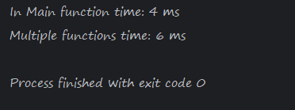

Clean Code May Have A Performance Impact
Posted on January 02, 2025
When writing code, one of the primary goals is often readability and maintainability. Breaking down logic into smaller, reusable functions is a cornerstone of good software design. However, this approach may have a performance impact in performance-critical applications.
public class FunctionPerformanceTest {
public static void main(String[] args) {
int iterations = 100_000_000;
long startTime = System.currentTimeMillis();
int result = 0;
for (int i = 0; i < iterations; i++) {
result += i * 2;
result -= i;
}
long endTime = System.currentTimeMillis();
System.out.println("In Main function time: " + (endTime - startTime) + " ms");
startTime = System.currentTimeMillis();
multipleFunctions(iterations);
endTime = System.currentTimeMillis();
System.out.println("Multiple functions time: " + (endTime - startTime) + " ms");
}
private static void multipleFunctions(int iterations) {
int result = 0;
for (int i = 0; i < iterations; i++) {
result += compute1(i);
result -= compute2(i);
}
}
private static int compute1(int x) {
return x * 2;
}
private static int compute2(int x) {
return x;
}
}

The Program Counter (PC) is a special register in the CPU that keeps track of the current instruction being executed. When a function call is made, the following steps occur:
- Saving the Current State
- Jumping to the Function's Address
- Returning to the Caller